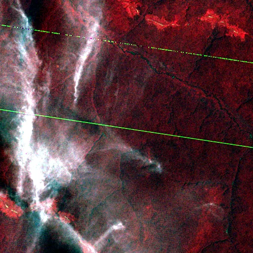

Benchmark / Near-lossless / lm-mss-4 / lm-mss-4-07
lm-mss-4-07
congo · 1973-01-22 · sample details

Metadata
| id | lm-mss-4-07 |
|---|---|
| source | LANDSAT/LM01/C02/T2 (Landsat Collection 2 Level-1) |
| asset | LANDSAT/LM01/C02/T2/LM01_190060_19730122 |
| crs | EPSG:32634 |
| transform | 707670.0 60.0 0.0 70890.0 0.0 -60.0 |
| datetime_start | 1973-01-22T08:09:12.072Z |
| datetime_end | 1973-01-22T08:09:12.072Z |
| bands | B4|B5|B6|B7 |
| shape | 4x512x512 |
| dtype | uint8 |
| unit | DN |
| scale | 1 |
| offset | 0 |
| nodata | 0 |
| input_sha256 | 75bdf8e57b2b6555045a98c28b0dfae18c1e3f616cfc1a7d2e3c21eb8ccc97c4 |
| site | congo |
| regime | tree |
| lon | 23.004 |
| lat | 0.502 |
| spacecraft | LANDSAT_1 |
| sensor | MSS |
| product_id | LM01_L1TP_190060_19730122_20200909_02_T2 |
| wrs_path | 190 |
| wrs_row | 60 |
| acquired_m | 79 |